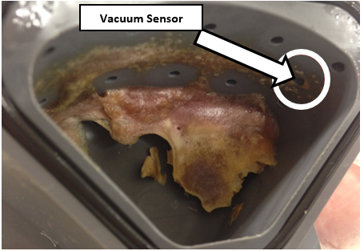
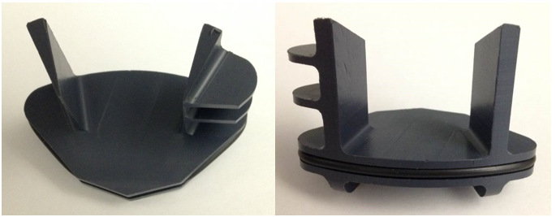
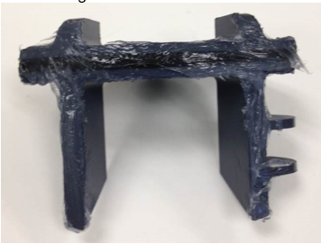
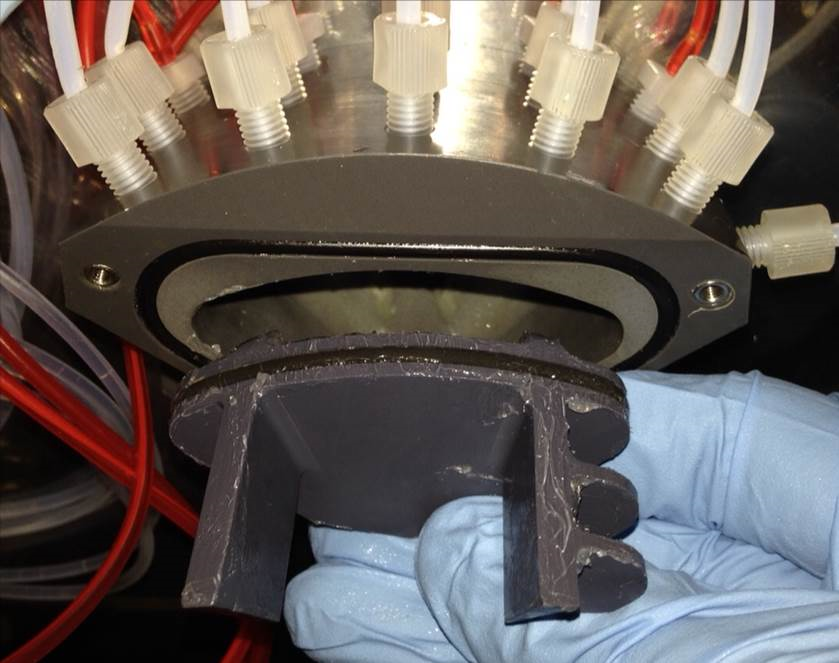
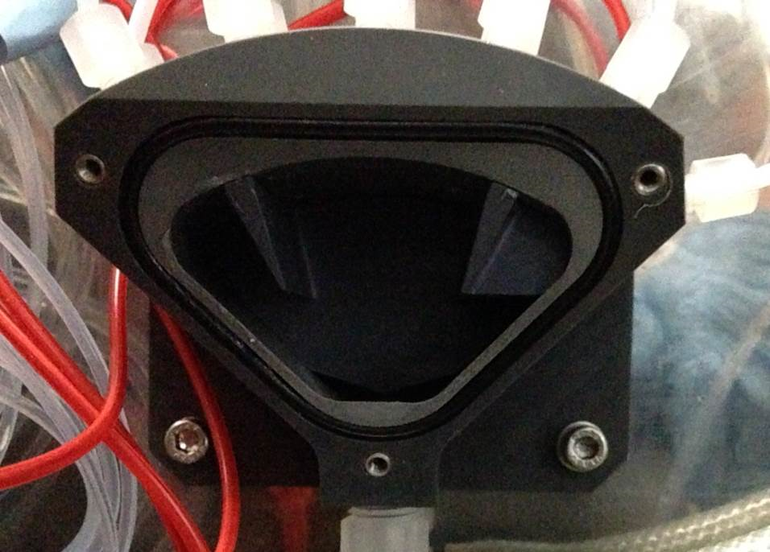
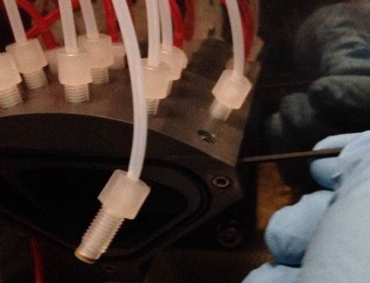

How to Install the Vacuum Manifold Insert
Purpose
The purpose of this procedure is to provide service personnel with instructions on how to install a new part: the Vacuum Manifold Insert. Installing this part will help reduce the buildup of solid waste in the vacuum manifold.
What is Affected
Several Panther Systems have experienced shut-downs due to clogging of the vacuum manifold. Sample material exiting the MagSWash Aspirator tubing mixes with bleach exiting the Output Queue tubes and can create a solid residue inside the Vacuum Manifold. See the image below of a very high volume system. This residue can build and clog the vacuum sensor port, leading to a system failure.


Parts and Materials Required
- Proper PPE
- Absorbent Pads
- Dow Corning High Vacuum Grease
- L-type 2 mm Hex Wrench
- One bottle of Advance Cleaning Solution
- O-RING, AS568-129, VITON
- O-RING, VITON, 75 DURO, 2.5MM X 58MM ID, BLACK
- Panther Manifold Insert
- 2.5 mm Hex Wrench
- Vacuum Manifold, OQ Asp Fitting (BAG OF 5)
- If OQ fittings are damaged and need to be replaced.
- Vacuum Manifold, Outlet Elbow Fitting
- If elbow fitting is damaged and needs to be replaced.
Time Required
- 30 Minutes
Procedure
|
|
WARNING— The Vacuum Manifold and connected tubing is part of the Panther System waste disposal system which should always be considered contaminated. It is important to wear proper PPE and take all necessary precautions. |
- Put on proper PPE.
- Shutdown the Panther System and PC.
- Open both Pipettor doors.
- Remove the Sample Bay Divider.
- Cover the entire Upper Bay with absorbent pads.

Note—The pads should cover the Reagent Bay, Tip Trays, Sample Bay, TCR  Target capture reagent—An assay-specific reagent added as part of specimen pipetting. Carousel, and underneath the vacuum manifold.
Target capture reagent—An assay-specific reagent added as part of specimen pipetting. Carousel, and underneath the vacuum manifold. - Move the Sample Pipettor away from the vacuum manifold work area.
- Place absorbent pads on a bench-top.
- Remove the 3 screws that fasten the clear front manifold cover with a 2.5 mm hex wrench.
Note—Some systems will have a manifold cover with a leak plate, other Panthers may include a silence plate. - Remove the front manifold cover and place it on the absorbent pads.
- Visually inspect the inside of the manifold to ensure that it is clean.
- Clean the manifold using a paper towel soaked in Advance Cleaning Solution.
- Replace the manifold cover if the solid residue inside the manifold is difficult to remove. Disconnect the aspirator tubing and unscrew the entire manifold from its elbow connector (to the vacuum tubing).
- Remove the manifold cove and thoroughly clean the inside of the manifold using Advanced Cleaning Solution. The Manifold and its ports MUST be free of any residue.
- Apply a thick layer of vacuum grease on the sides, top, and rubber O-ring of the Panther Vacuum Manifold Insert.

- Orient the Manifold Insert as shown in the image below, and press it squarely inside the manifold cavity.

- Press the insert fully against the back wall of the manifold, such that the front is flush with the face of the cavity. The clear front manifold cover should be able to be reinstalled without interference from the Insert.

- Re-install the manifold cover using a 2.5 mm hex wrench.
- If the Vacuum Manifold was removed from the system, re-install the manifold onto its elbow connector and reconnect the Output Queue aspirator tubing. DO NOT over-tighten the manifold.
- The vacuum grease used to install the Manifold Insert may have clogged the Vacuum Sensor port or the MagWash tubing ports. Clear the Vacuum Sensor port by unscrewing the Vacuum Sensor fitting with an L-type 2 mm hex wrench.

- Repeat on each of the MagWash ports, reinstalling each fitting into its proper hole when complete.
- Decontaminate any tools that come in contact with the vacuum manifold.
- Remove any paper towels or pads used in this procedure.
Verification
- Power on the Panther System and PC.
- Open the System Software.
- Perform a Prime Operation of pumping fluid through tubing to ensure proper and consistent fluid delivery (remove air from the tubing, etc.)..
- Observe and ensure there are no leaks or clogs in the manifold or the tubing.
- Verify that the system does not report any vacuum pressure out-of-range errors.
- Verify that the OQ aspirates all fluid from the MTU Multi-tube unit—Container used to process tests in the instrument. An MTU contains five separate reaction tubes. The MTU is moved through the instrument by the linear distributor and includes five tiplets for pipettiing to be used in the mag wash station..
- Verify that no MagWash or Output Queue errors are reported by the system.
- Verify that there are no fatal crashes reported by the system.
 button at the top of the page to send feedback, comments, or change requests.
button at the top of the page to send feedback, comments, or change requests.